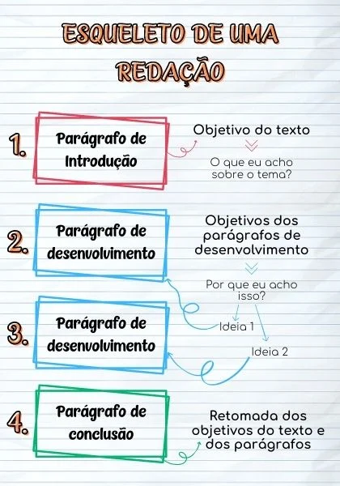
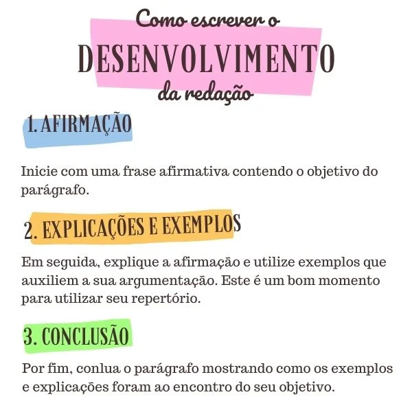

-A redação do Enem vale de 0 a 1.000 pontos. A nota é dividida em cinco partes, com 0 a 200 pontos para cada
competência avaliada na prova:
-Demonstrar domínio da modalidade escrita formal da Língua Portuguesa.
-Compreender a proposta de redação e aplicar conceitos das várias áreas de conhecimento para desenvolver o tema,
dentro dos limites estruturais do texto dissertativo-argumentativo em prosa.
-Selecionar, relacionar, organizar e interpretar informações, fatos, opiniões e argumentos em defesa de um ponto
de vista.
-Demonstrar conhecimento dos mecanismos linguísticos necessários para a construção da argumentação.
-Elaborar proposta de intervenção para o problema abordado, respeitando os direitos humanos.
-Caso apresente excelente domínio em cada uma das competências avaliadas, o candidato ganha nota máxima, 1.000.
A nota zero, por sua vez, acontece quando o participante:
-Foge totalmente do tema;
-Não desenvolve o texto no modelo solicitado (dissertativo-argumentativo);
-Desrespeita os direitos humanos
Escreve 7 linhas ou menos;
-Copia os textos motivadores;
-Usa xingamentos ou outras formas propositais de anulação;
-Apresenta partes deliberadamente desconectadas do tema (receitas de bolo, letras de música, poesias, etc.);
-Entrega a folha de redação em branco, mesmo que tenha desenvolvido o texto no rascunho do caderno de prova;
Como é corrigida a redação do Enem?
A redação do Enem é corrigida manualmente, uma a uma. Cada texto passa pela mão de pelo menos dois avaliadores,
que não têm contato entre si e não sabem quem é o autor.
Os avaliadores são professores certificados, contratados pelo MEC. Eles atribuem uma nota de 0 a 200 a cada uma
das cinco competências. A soma dessas notas é a pontuação geral da redação.
Quando a nota geral atribuída pelos dois professores tem uma diferença de 100 pontos ou mais, ou quando a
pontuação de alguma competência tiver pelo menos 80 pontos de diferença, acontece o que a organização do Enem
chama de discrepância. Nesse caso, a redação passa por uma terceira correção ? ou quantas forem necessárias até
que haja um consenso na nota.
Por que é importante tirar uma boa nota na redação do Enem?
Antes de falarmos da importância da nota da redação do Enem, vamos entender brevemente como funciona o sistema
de pontuação das demais provas.
As quatro objetivas (Linguagens e Códigos, Ciências Humanas, Ciências da Natureza e Matemática)
são corrigidas a partir da Teoria de Resposta ao Item (TRI), um modelo complexo que envolve cálculos
matemáticos, estatística e psicometria.
A TRI consegue detectar chutes e leva em consideração o grau de dificuldade das questões e a coerência do
participante ao responder perguntas fáceis, médias e difíceis. Com isso, as pontuações mínimas e a máximas das
provas objetivas mudam a cada edição do Enem. E dificilmente chega a 1.000 pontos.
Uma das vantagens de caprichar na redação é que ela pode render pontuação acima das provas objetivas, aumentando
a média geral.
Outro motivo para você investir na redação é que a nota é o primeiro critério de desempate em processos
seletivos que usam a pontuação do Enem, como Sisu, ProUni e FIES. Ou seja, quando dois candidatos têm a mesma
quantidade de pontos, tem prioridade aquele que apresentar maior nota na redação.
Por fim, vale lembrar que os participantes que tirarem zero na redação estão automaticamente fora da disputa por
vagas em universidades públicas pelo Sisu, bolsas de estudos pelo ProUni e financiamento estudantil pelo FIES.
Como fazer uma boa redação no Enem
A cada edição do Enem, o MEC divulga um material super completo com todas as orientações e dicas para fazer uma
boa redação ? desde como seguir o formato dissertativo-argumentativo até exemplos de redações nota 1.000 com
correção comentada. Vale muito a pena baixar essa cartilha assim que você se inscrever no Enem.
Separamos aqui algumas dicas:
1. Pratique o quanto antes. Pegue os temas de edições anteriores do Enem, para começar. 2. Leia bastante para aumentar seu repertório de ideias, argumentação e vocabulário. 3. Fique atento aos grandes temas da atualidade. O Enem tem preferência por assuntos que
impactam a sociedade como um todo. Publicidade infantil, violência contra a mulher e intolerância religiosa são
alguns exemplos recentes. 4. Quando estiver confortável com o modelo pedido, comece a treinar velocidade. No dia do Enem,
você terá apenas uma hora para ler os textos motivadores, apresentar sua tese, defendê-la com argumentos e
pensar numa solução que respeite os direitos humanos, além de passar o texto a limpo antes de entregar.
Estrutura
A estrutura da redação Enem
Você já leu um texto sem introdução e conclusão, apenas com parágrafos de desenvolvimento? Colocando assim pode
parecer estranho, mas esse é um erro bastante comum que os candidatos cometem.
Para que você não perca pontos valiosos, é importante dominar a estrutura de um texto
dissertativo-argumentativo, o modelo de redação cobrado no Enem, no Encceja e em vários vestibulares.
Portanto, o modelo de estrutura de redação que sugerimos aqui é de 4 parágrafos: um de introdução, dois de
desenvolvimento e um de conclusão. Tanto a introdução quanto a conclusão necessitam sempre de apenas um
parágrafo. Enquanto isso, o desenvolvimento tem um número variável de parágrafos.

A Introdução da Redação
Não é sem razão que o primeiro parágrafo da estrutura de uma redação é chamado de introdução, pois é nessa parte
do texto que você vai expor (apresentar) as principais questões a serem abordadas no restante do texto. No
primeiro parágrafo, o leitor terá uma dimensão geral do assunto e vai entender as razões pelas quais a discussão
do problema é relevante.
E nessa hora que você deve envolver o leitor e ser criativo o bastante para instigá-lo a continuar a leitura.
Assim, uma boa forma de fazer isso é relacionar o tema a aspectos pessoais e/ou sociais. Mostre como essa
questão pode afetar a vida do leitor ou como ele está relacionado a ela.
Para que você consiga fazer isso, você pode dividir a sua introdução em 3 partes:
a) contextualização, b) tema, e, c) tese.
1- Contextualização
-A contextualização ou assunto é algo mais abrangente do que o tema, mas que está conectado a ebr
le. Por exemplo: o tema da redação de 2018 foi “a manipulação do usuário pelo controle de dados na internet”.
Nesse caso, o contexto poderia ser sobre meios de comunicação, redes sociais, internet em geral, privacidade,
entre outras possibilidades.
Simulado Encceja Gratuito
gapixel
Além disso, o contexto é um bom lugar para você citar algum repertório sociocultural, como um livro, um filme,
uma música, um dado histórico ou estatístico.
2- Tema
Depois de fazer a contextualização, você deve demonstrar como o contexto está ligado ao tema. Tente não copiar o
tema de forma literal. Em vez disso, tente escrever com suas palavras. Mas não esqueça de que todos os elementos
do tema precisam estar presentes. Utilizando o exemplo anterior, você deve lembrar de mencionar a “manipulação”,
o “controle de dados” e a “internet”.
3- Tese
Em seguida, você não pode esquecer de escrever a sua tese. A tese ou objetivo do texto é aquilo que você
pretende defender ao longo da redação. Essa é uma das partes mais importantes de toda a sua redação. A fim de
definir qual será a sua tese, você pode se perguntar: “o que eu acho sobre o tema?”. Partindo da sua resposta,
você vai conseguir formular o objetivo do seu seu texto, ou seja, sua tese.
Perguntas na Introdução
Outras perguntas que podem auxiliar na criação da sua tese e, mais à frente, podem fornecer ideias para os
parágrafos de desenvolvimento e para a conclusão:
Qual o problema?
Por que se trata de um problema?
Quais as causas para tal problema?
Há alguma solução?
Como e por que colocar tal solução em prática?
Como essa proposta pode, de fato, resolver o problema?
Dica: Uma boa maneira de treinar a introdução dentro do modelo da estrutura da redação do Enem
nos seus textos de treinamento é ler. Ler sempre, pelo menos uma vez por semana passar os olhos em artigos de
jornais e revistas.
Exemplo de Introdução
“Segundo as ideias do sociólogo Habermas, os meios de comunicação são fundamentais para a razão comunicativa.
Visto isso, é possível mencionar que a internet é essencial para o desenvolvimento da sociedade. Entretanto, o
meio virtual tem sido utilizado, muitas vezes, para a manipulação do comportamento do usuário, pelo controle de
dados, podendo induzir o indivíduo a compartilhar determinados assuntos ou a consumir certos produtos.
Isso ocorre devido `falha de políticas públicas efetivas que auxiliem o indivíduo a “navegar”, de forma correta,
na internet, e à ausência de consciência, da grande parte da população, sobre a importância de saber utilizar
adequadamente o meio virtual. Essa realidade constituiu um desafio a ser resolvido não somente pelos poderes
públicos, mas também por toda a sociedade”.
O que você não deve fazer na Introdução
O principal cuidado que você deve ter ao escrever a introdução do seu texto é não misturar os assuntos. A
pluralidade de ideias deixa o texto poluído e o leitor confuso. E ainda: não mencione nenhum fato na introdução
que não será explorado ao longo do texto. Foque na sua tese principal.
É recomendável evitar períodos longos no primeiro parágrafo. O espaço para produzir orações mais longas é o
desenvolvimento. E mesmo assim, esse recurso deve ser usado com bastante critério.
Como fazer o desenvolvimento
Essa parte da estrutura de uma redação pode ser resumida em duas palavras: argumentação e exemplificação. É aqui
que as informações mais polêmicas devem aparecer.
Nesse espaço, você também pode dar voz a visões opostas sobre o assunto. Tudo o que foi levantado na introdução
deve ser discutido aqui e lembre-se de desenvolver uma ideia diferente para cada parágrafo.
Mas, como conseguir fazer isso na prática? O primeiro passo é relembrar a tese ou objetivo que você criou na
introdução. Por exemplo: numa redação sobre agrotóxicos, você pode estabelecer como objetivo mostrar que os
agrotóxicos são um retrocesso para a saúde e para a agricultura.
Então, você deve desmembrar esse objetivo em dois: um para o primeiro parágrafo de desenvolvimento e outro para
o segundo. No caso do exemplo anterior, você poderia escrever um parágrafo sobre o impacto dos agrotóxicos na
saúde e outro na agricultura.
Se você tiver dificuldades para estabelecer os objetivos dos parágrafos, pode olhar para sua tese e se perguntar
“por que eu acho isso?”. A partir da resposta, você deve formular duas ideias diferentes e explicar melhor cada
uma delas em um parágrafo do desenvolvimento da redação.
Depois de estabelecidos os objetivos dos parágrafos, você vai precisar de 4 elementos para construir cada um dos
seus parágrafos de desenvolvimento: afirmação, explicação, exemplificação e conclusão.
Afirmação ou tópico frasal
O primeiro elemento do parágrafo deve ser uma afirmação do seu objetivo. Essa frase vai dizer o que você vai
abordar naquele parágrafo. Por exemplo: “Os agrotóxicos têm como um de seus prejuízos a relação com a saúde
brasileira”. Explicação
Em seguida, você vai explicar a afirmação. Ou seja, vai explicar como os agrotóxicos interferem na saúde.
Exemplificação
Também é importante dar exemplos para enriquecer a sua argumentação. É nesse momento que você deve utilizar o
seu repertório sociocultural, citando uma atualidade, um livro, um filme, uma fala de alguém, um estudo, uma
música, etc.
Conclusão
Por fim, é importante concluir o parágrafo e mostrar como a explicação e os exemplos fizeram você encontrar o
seu objetivo. No nosso exemplo, a conclusão deveria mostrar como a explicação e os exemplos mostraram que
agrotóxicos fazem mal à saúde.

Exemplo de parágrafo de desenvolvimento
Veja um exemplo de um parágrafo de desenvolvimento. O trecho abaixo é uma continuação da introdução apresentada
no item anterior.
“No contexto relativo à manipulação do comportamento do usuário, pode-se citar que no século XX, a Escola de
Frankfurt já abordava sobre a “ilusão de liberdade do mundo contemporâneo”, afirmando que as pessoas eram
controladas pela “indústria cultural”, disseminada pelos meios de comunicação de massa. Atualmente, é possível
traçar um paralelo com essa realidade, visto que milhões de pessoas no mundo são influenciadas e, até mesmo,
manipuladas, todos os dias pelo meio virtual, por meio de sistemas de busca ou de redes sociais, sendo
direcionadas a produtos específicos, o que aumenta, de maneira significativa, o consumismo exacerbado. Isso é
intensificado devido à carência de políticas públicas efetivas que auxiliem o indivíduo a “navegar”
corretamente na internet, explicando-lhe sobre o posicionamento do controle de dados e ensinando-lhe sobre
como ser um consumidor consciente”.
O que não fazer no desenvolvimento
Como os parágrafos de desenvolvimento são mais longos, se você não estiver atento, corre o risco de repetir
informações – o que acarreta na perda de pontos. O mesmo erro pode ocorrer na ânsia em convencer o leitor sobre
os seus argumentos.
Outro cuidado importante é em relação aos exemplos. Eles devem ser bastante representativos para situar o leitor
e estabelecer a comunicação. Imagine que seus exemplos são uma espécie de pontos luminosos do seu texto. Eles
devem ser claros o bastante para dar ainda mais legitimidade aos seus argumentos dentro da estrutura da redação.
Como fazer uma conclusão
Se a palavra-chave do desenvolvimento é argumentação, no último parágrafo o termo que você deve ter em mente é
solução. Você levantou uma determinada questão ao longo do texto, certo? A conclusão é o momento de apresentar
as possíveis saídas para o problema por meio da proposta de intervenção e, assim, finalizar a estrutura da
redação de forma completa.
O seu parágrafo de conclusão divide-se em três partes: uso de conectivo de conclusão, retomada do objetivo e
proposta de intervenção.
1- Conectivo para conclusão
Primeiramente, você deve lembrar que o parágrafo de conclusão sempre deve iniciar com um conectivo. Você pode
usar “portanto” ou “dessa forma”, por exemplo. Lembrando que o uso de conectivos sempre ajuda a manter a coesão
e a coerência do seu texto.
2- Retomada do objetivo
Em seguida, você deve retomar os objetivos da sua redação, tanto o que você estabeleceu na introdução quanto
aqueles dos seus parágrafos de desenvolvimento.
3- Proposta de intervenção
Por fim, você deve escrever uma proposta de intervenção. Essa é uma parte muito importante, pois só a proposta
de intervenção já vale 200 pontos da nota da sua redação.
Os corretores da redação não esperam que durante o tempo de prova você encontre uma solução para o problema
tematizado. Eles somente esperam que você exponha alguma ação que ajude no enfrentamento do problema. Não
precisa ser nada inédito, só precisa ser uma intervenção bem estruturada.
Mas, como fazer uma proposta de intervenção correta e completa? Ela precisa ter 5 elementos:
1. Ação (o que?)
2. Agente (quem?)
3. Efeito (para quê?)
4. Modo (como?)
5. Detalhamento (explicação e exemplos)
Portanto, não é suficiente citar uma intervenção de maneira genérica, sem explicar quem seria o responsável ou
de que forma seria colocada em prática.
Exemplo de conclusão
“Portanto, cabe aos Estados, por meio de leis e de investimentos, com um planejamento adequado, estabelecer
políticas públicas efetivas que auxiliem a população a “navegar”, de forma correta, na internet, mostrando às
pessoas a relevância existente em utilizar o meio virtual racionalmente, a fim de diminuir, de maneira
considerável, o consumo exacerbado, que é intensificado pela manipulação do comportamento do usuário pelo
controle de dados. Além disso, é de suma importância que as instituições educacionais promovem, por meio de
campanhas de conscientização, para pais e alunos, discussões engajadas sobre a imprescindibilidade de saber
usar, de maneira cautelosa, a internet, entendendo a relevância de uma “polarização digital” para a
concretização da razão comunicativa, com o intuito de utilizar o meio virtual para o desenvolvimento pleno da
sociedade”.
Os 5 elementos da proposta de intervenção do exemplo:
ºAção: “estabelecer políticas públicas efetivas”.
ºAgente: “Estados”.
ºEfeito: “a fim de diminuir, de maneira considerável, o consumo exacerbado”.
ºModo: “por meio de leis e de investimentos”.
ºDetalhamentos: “que auxiliem a população a ‘navegar’, de forma correta, na internet,
mostrando às pessoas a relevância existente em utilizar o meio virtual racionalmente”, “que é intensificado pela
manipulação do comportamento do usuário pelo controle de dados”.